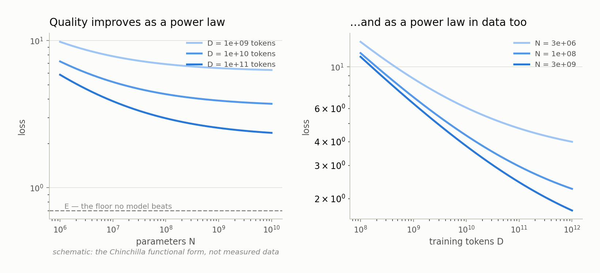

Chapter 4 — Scaling Laws (what they are and why anyone trusts them)#
By the end of this chapter you will know what a power law is and how to read one, why the quality of a language model turns out to follow one, what Kaplan and Chinchilla actually established, how a scaling law gets fitted from a grid of small training runs and then extrapolated upward, and — most importantly for this book — exactly which question Chinchilla answered and which question it left wide open. That open question is the one LOGOS is built to answer.
The empirical surprise#
Deep learning has a reputation for being unpredictable, and mostly it deserves it. Change the learning rate and a run diverges. Change the initialization and a benchmark moves. Against that background, the discovery that showed up around 2020 was genuinely startling.
Fix the architecture family, the data distribution, and the training recipe, then vary only two things — how many parameters the model has (the adjustable numbers inside it, written N) and how many training tokens it sees (written D) — and the final loss does not jitter around. It falls along a smooth curve, smooth enough that you can fit it with a three-term formula, extrapolate far past anything in your fit, and be right to within a few percent.
That is why scaling laws matter. They convert "let's train it and find out," which costs millions of dollars and months, into "let's compute it and find out," which costs an afternoon. Every large-model training run you have heard of was sized by an argument of this shape.
The figure below shows the shape: loss falling as parameters increase, loss falling as tokens increase, and the compute-optimal ray marking the best split of a fixed budget between the two.

What a power law is#
A power law is a relationship where one quantity changes as a fixed power of another: y = A/x^α, with A a constant and α (alpha) a positive exponent. The defining property, and the only one you need, is this: every doubling of x buys the same fractional improvement in y.
Work it through. Suppose the loss contribution from model size behaves as A/N^0.34 — an illustrative exponent, chosen to make the arithmetic concrete. Double N and that term is multiplied by 2^(-0.34) ≈ 0.79, so doubling the model shaves 21% off that piece of the loss. Double again: same 21%. Go from 1× to 16× (four doublings) and the term is multiplied by 0.79^4 ≈ 0.39, removing about 61% of it.
Two consequences follow, and both matter later.
First, there are no cliffs and no free lunches. The improvement per doubling is constant, so you never hit a magic size where everything suddenly works, and never hit a wall where scaling stops helping.
Second, a power law is a straight line on log-log axes. Take logarithms of y = A/x^α and you get log y = log A − α·log x, a line with slope −α. That is why scaling-law papers plot log loss against log parameters: a power law is ruler-straight there, and if the points bend, the law is breaking and you can see it.
Two knobs, one budget#
You can make a model better by making it bigger or by training it longer. Both cost compute, so the practical question is not "which helps?" — both do — but "given a fixed budget, how should I split it?" To ask that precisely you need a cost formula. The standard approximation is
C ≈ 6 · N · Dwhere C is total training compute in FLOPs (floating-point operations — individual multiplies or adds, the standard currency of compute). The 6 is bookkeeping: a forward pass costs roughly 2 operations per parameter per token, and the backward pass roughly twice that again.
The structural fact that matters is that C depends on the product N·D. A fixed budget therefore defines a family of choices: a small model on a lot of data, a big model on a little data, or anything between. They all cost the same. They do not all work the same.
Kaplan, then Chinchilla#
Kaplan et al. (2020) put the first careful version of this on the map. They trained a large grid of models, showed the smooth power-law behavior in N, in D, and in C, and concluded that with a fixed budget you should put most of the extra compute into a bigger model — parameters aggressively, data modestly. The field took the advice literally, and the next two years produced a run of very large models trained on comparatively little text.
Hoffmann et al. (2022) — the paper everyone calls Chinchilla — redid the analysis with a wider grid and more careful treatment of the learning-rate schedule, and reached a different answer. The correct split is roughly balanced: double your compute budget and you should roughly double the model and roughly double the data. In round numbers, about 20 training tokens per parameter. Then they demonstrated it, training a model at the compute-optimal point that outperformed a substantially larger model — roughly 3.5× its parameter count — trained on the same budget. Same bill, better model, purely from reallocating the money.
Here is the arithmetic concretely. Take an illustrative budget of C = 6 × 10^21 FLOPs, so N·D = 10^21. Follow Chinchilla and set D = 20·N: then 20·N² = 10^21, giving N ≈ 7 × 10^9 parameters and D ≈ 1.4 × 10^11 tokens — about 7 billion parameters on 140 billion tokens. Spend the same budget on 20 billion parameters and you get only 50 billion tokens, 2.5 per parameter: a big model that has barely read anything. Spend it on 2 billion and you get 250 tokens per parameter: a small model reading the same patterns over and over. Both are worse than the balanced point.
Chinchilla reshaped the field within months — the clearest example there is of a scaling law changing what people build.
The functional form#
Chinchilla's fit uses a form that has become the standard starting point:
L(N, D) = E + A/N^α + B/D^βRead it as three sources of loss added together.
E is the irreducible term. Text is partly unpredictable. Even a perfect model could not guess the next token with certainty, because that token depends on choices the author made for reasons the text does not contain. E is that floor — the entropy of the data, the uncertainty no model can remove. No amount of scale drives loss below E.
A/N^α is the capacity-limited term — the loss you carry because the model is too small to hold everything the data could teach it. It shrinks as you add parameters, at a rate set by α; larger α means parameters buy more.
B/D^β is the data-limited term — the loss you carry because the model has not seen enough text to learn what it structurally could. It shrinks as you add tokens, at a rate set by β.
The exponents are the interesting part. They are not chosen; they are measured, and their relative size decides the allocation. If α and β came out very different, the optimal strategy would be lopsided — pour everything into whichever axis pays better. Chinchilla's fitted exponents came out close to each other, and that near-symmetry is why the answer was "scale both about equally."
How a law is actually fitted#
The procedure is less mysterious than the results make it sound.
Choose a grid of sizes and token counts — say five model sizes crossed with three tokens-per-parameter settings. Train every cell under a frozen protocol: identical architecture family, tokenizer, data in identical order, optimizer, and schedule. Only N and D move. This is not fussiness; a law fitted across runs that differed in three other ways is fitting those differences too, and it will extrapolate to nonsense. For each finished run, record one number: the final loss on a held-out validation set the model never trained on (Chapter 3).
Now you have a table of (N, D, L) triples. Pick the functional form and search for the values of E, A, α, B, β whose predictions match the observed losses as closely as possible — minimizing the residuals, the gaps between predicted and measured loss. This is ordinary curve fitting, run from many starting points so you do not get trapped in a bad local solution. LOGOS uses a robust loss on log-space residuals with a multi-start L-BFGS optimizer and bootstrap confidence intervals, so every fitted exponent arrives with an error bar.
Then comes the step everything depends on: you extrapolate. Plug in an N and a D far above anything in your grid and read off a predicted loss. This is standard practice — nobody fits a law at the scale they intend to deploy, because if they could afford to train there they would not need the law. But the whole exercise rests on one assumption: the functional form that described your small models still describes large ones. If the curve bends above your grid, your prediction is wrong, and nothing inside the fit can warn you. The honest response is to test it, which is why LOGOS fits at 3M–60M parameters, freezes the fit, commits timestamped predictions to the repository, and only then trains the 125M validation runs.
What Chinchilla does not answer#
Chinchilla is a correct answer to a specific question, and the specificity is easy to miss.
It optimizes a training budget, not a deployment budget. The quantity being spent is FLOPs during pretraining. But a served model answers queries millions of times, and what binds during serving is memory: bytes of weights in fast memory, plus bytes of cache per concurrent user. Chinchilla has nothing to say about that, because it was never asked.
It assumes 16-bit weights throughout. Precision does not appear anywhere in L = E + A/N^α + B/D^β. Every model in the fit stored each parameter in 16 bits, so "N parameters" and "2N bytes" were interchangeable and there was no reason to distinguish them. Once precision becomes a variable they come apart completely — the subject of Chapter 5 onward.
And essentially nobody trains at Chinchilla-optimal anymore. The economics are straightforward: once inference dominates a model's lifetime cost, a smaller model trained far past the compute-optimal point is the better deal, because you pay the extra training once and collect the smaller serving cost forever. Modern models are routinely overtrained — well beyond 20 tokens per parameter, sometimes by an order of magnitude. LOGOS's grid deliberately spans this: 20×, 80×, and 320× tokens per parameter, so the overtraining axis is measured rather than assumed.
Put those three together and the shape of the missing law is visible. Chinchilla asks: given a fixed number of FLOPs, how do I split them between parameters and tokens? The question nobody has answered is: given a fixed number of bytes at inference time, how do I split them? — across parameter count N, weight precision b_w, KV-cache precision b_kv, and training tokens D. Chapter 9 states that question in full.
What the precision literature has and hasn't done#
LOGOS is not the first project to notice that precision belongs in this picture, and it is worth being exact about who did what.
| Work | What it established |
|---|---|
| Kumar et al. (2024) | Brought precision into scaling laws as an explicit variable, rather than a fixed background assumption. |
| Ouyang et al. (2024) | Showed that low-bit quantization favors undertrained models — the fewer tokens per parameter a model saw, the less quantization costs it. LOGOS reproduces this dynamic natively, in its own stack, at micro scale. |
| ParetoQ (Liu et al. 2025) | Built a unified 1-to-4-bit ladder, comparing bit widths on a common footing instead of one width at a time. LOGOS's 2/3/4-bit quantizer follows this design. |
| BitNet b1.58 (Ma et al. 2024) | Demonstrated that ternary-weight models trained low-bit from scratch are viable, not merely a compression curiosity. LOGOS's ternary arm follows this recipe. |
| Spectra (Kaushal et al. 2024) | Released an open suite of low-bit models, making the regime publicly studiable. |
Every one of these is real and load-bearing. What none of them did is fit a scaling law whose budget variable is total inference memory in bytes, for models trained low-bit from the start. That gap — not the ingredients, which exist — is where LOGOS sits.
What to remember#
A power law means every doubling buys the same fixed fraction of improvement, which makes it a straight line on log-log axes and makes model quality predictable enough to plan around. Chinchilla's form, L = E + A/N^α + B/D^β, splits loss into an irreducible floor plus a capacity-limited term plus a data-limited term, and its fitted exponents said to scale parameters and tokens roughly together, about 20 tokens per parameter. Such laws are fitted by training a grid of small models under a frozen protocol, minimizing residuals, then extrapolating upward — which works only as long as the form keeps holding above the grid, so the extrapolation must be tested rather than trusted. What Chinchilla optimizes is a training budget in FLOPs, with 16-bit weights assumed everywhere and no precision variable in sight. The question that leaves open — given a fixed number of bytes at inference, how should you split them between more parameters and more bits per parameter — is what this book is about, and the next two chapters build the vocabulary to state it.